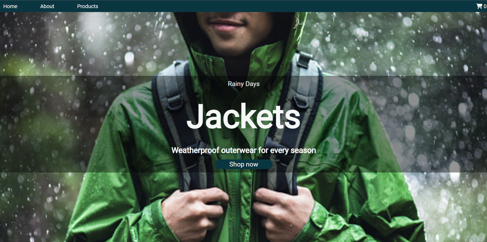
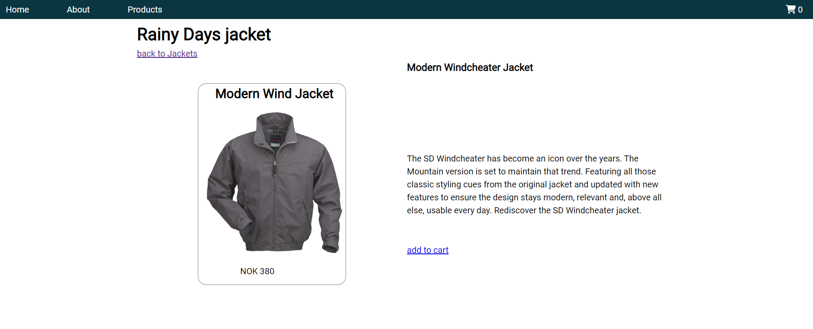
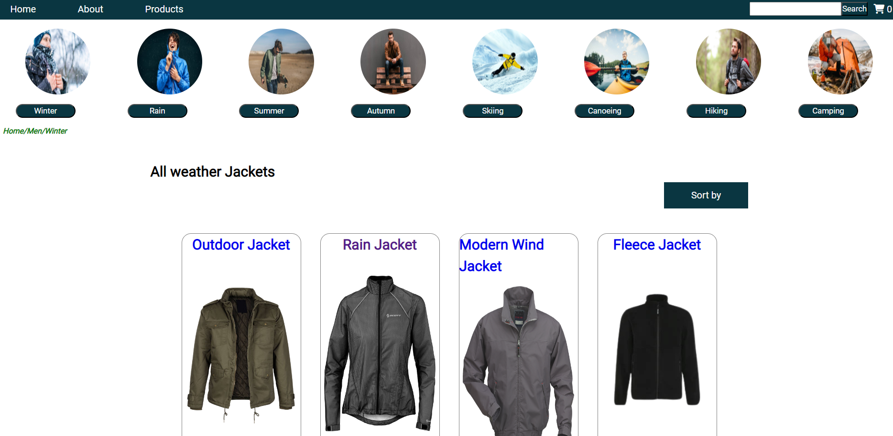

Description
In this course assignment, we must use our knowledge of WordPress content management to setup an API for consumption in my Rainy days website project. The name of the website is Rainy Days.
Link to project
https://github.com/nyolarraklay/CA_CMS_rainydays.git